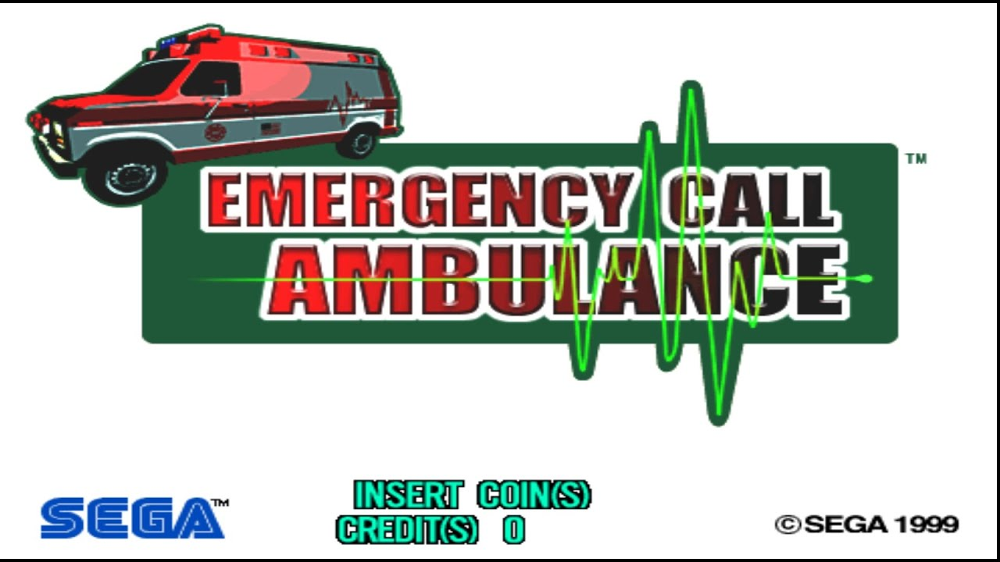
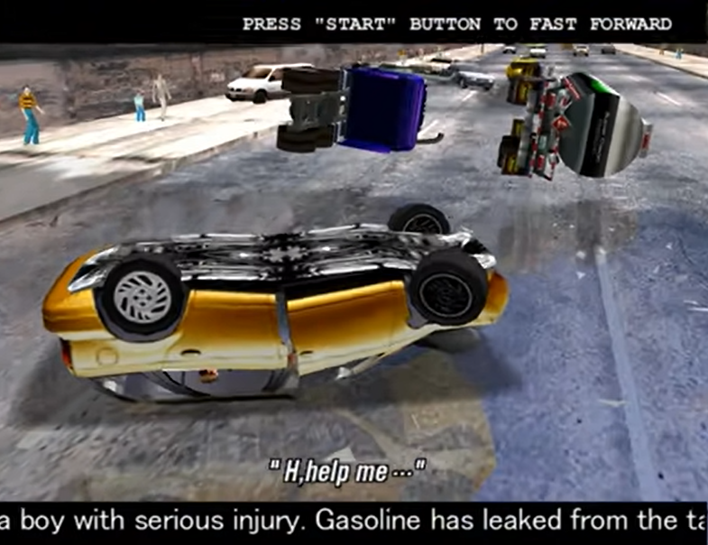
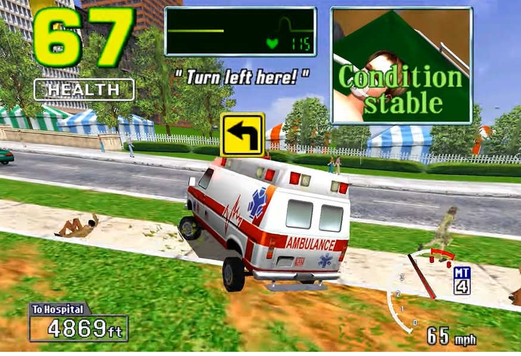
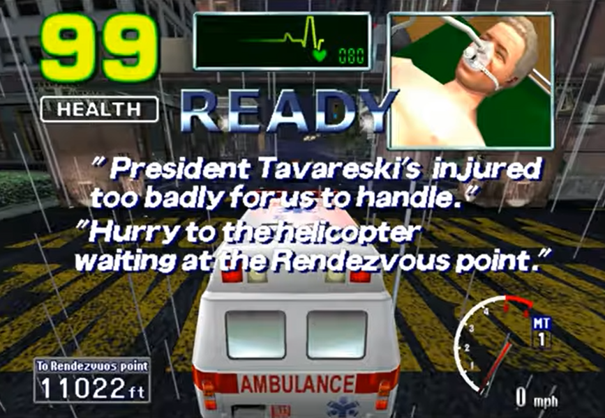

i'm a video game lightweight. and i mean that both in the way you expect me to and in ways you probably don't.
obviously i'm not a big horror game fan, i don't enjoy the sensation of being scared or being in dread and i never have, in video games or otherwise. i live in enough dread as is, thank you very much. but beyond that, i can't bring myself to be a bad person in a video game. even if it's just selecting a mean dialogue option, even if it's selecting a dialogue option that isn't actually mean but it's just something i wouldn't say! i never feel comfortable doing it, even out of curiosity. i hate to see other people angry or frustrated or sad or god forbid injured, especially when it's my fault. with that said obviously there's a level of detachment that exists in most video games. i don't feel guilty beating up a random human guard in a jrpg because, despite being a human, they're effectively dehumanized by the game. it's not invested in making it feel like you're actually killing someone, which makes doing it not something you have to think about. comparing that to selecting a dialogue option where the characters around me will act in a way that makes them visibly experience a negative emotion, hopefully it's easier to get why it's easier to stomach for me.
of course, putting those two things together is what's far worse. someone being injured, maybe even dying, as a direct result of your actions, and the game wants to make sure you know it. there's plenty of games that do this (i will never play spec ops the line), but there's one in particular that will always stick out in my mind for being truly unique in its portrayal of player-caused human suffering. genuinely one of the most effective horror games i've ever played (that i'm not even sure was meant to be a horror game): sega's emergency call ambulance.
emergency call ambulance released in arcades in 1999, and to this day it's never gotten a port. this is a similar situation to many of its contemporaries, including my beloved daytona usa 2. that was the reason i played this game in the first place, in fact: daytona 2 is still one of my favorite games of all time (a story i'll definitely have to write about another time), and after playing it i wanted to make sure i played all of sega's other model 3 board racing titles. that included emulating the many that also never got a release outside of the arcades. scud race? banger. sega rally 2? all timer. le mans 24? okay that one i didn't actually like very much but it had cool music. out of all of these games though, crazy taxi is not only the only sega model 3 racing game that an american vice presidential candidate has played on a twitch livestream, it's also definitely the game with the largest legacy. it was a massive hit at the time as well, so it's only natural sega would try and riff on this formula.
what we got was emergency call ambulance, a game with a pretty entertaining premise. take the gameplay and enviornments of crazy taxi and recontextualize the timer by turning the player into a paramedic driving an ambulance. you need to rush your patient to the hospital as fast as possible, while avoiding crashes to keep the patient in good condition. as far as a pitch goes, this game sounds like it would work great. and i think it kind of does? but that doesn't stop me from feeling profoundly uncomfortable while playing it.
after popping in a coin and selecting manual or automatic transmission as is tradition, we're greeted with our "1ST CASE: TRAFFIC ACCIDENT." a car full of a family and their dog is driving along before a tanker truck comically overturns in the middle of the road. the family crashes directly into it, sending their car flying. that's all in good fun, i love a video game car crash. but of course most video game car crashes don't explore the consequences and aftermath.
throughout this cutscene, we hear narration describing the scene, stating that at least 10 people are injured, and that the boy has serious injuries. after he's pulled from the burning wreckage by the family's dog (the real unsung hero of this game, if we're being honest), he's wheeled into the ambulance, and text shows the boy is 10 years old and is suffering from multiple injuries and severe abdominal pain. the game then flashes "Jack needs to be examined right away! Hurry to the hospital!"
here we get to the gameplay proper: in each scenario you'll be directed on how to reach the hospital, and if you get there in time, you'll advance to the next stage. compared to crazy taxi, the game is much more linear and hevaily focused on scripted events at different parts of the course. the ambulance's controls are also much slower and heavier. however, the game's strict time limit still requires the player to perform many of the classic crazy taxi maneuvers: drifting through crowds of people, making jumps, and weaving through traffic that does not know the meaning of pulling over for sirens and lights. these game mechanics are staples of arcade driving games for a reason: they're fast, frantic, and over-the-top in a way that perfectly compliments the thrill of playing in an arcade setting, and any other racing game you can think of like this will structure the rest of its game mechanics around that same sense of carefree fun.
emergency call ambulance, of course, does not. here we have a picture-in-picture view of doctors taking car of the boy on a stretcher in the back of the ambulance, alongside a health meter that slowsly ticks down. taking jumps too hard or running into obstacles causes this health meter to drop, and it drops quickly. and if the health reaches zero: that child is dead. and the game makes sure you know it. the game literally fades out with the boy saying "I don't want to die..." as the heart rate monitor flatlines.
this tonal inconsistency is what makes the game terrifying to me in a sort of existential way. everything about the game is exaggerated to a great degree. not just with the physics of the car and the overall game feel, but even the obstacles in the level design generally include random massive car accidents happening on your way to the hospital. the incredibly grave stakes and the constant reminder of the game's remarkably grim tone contrast with all this silliness in a way that just makes it feel genuinely disturbing to play. it's like making a joke at the wrong time and everyone in the room being uncomfortable with it, but as an entire video game level.
this is compounded by the fact that this game is kind of complete bullshit. i mentioned the random crashes you'll need to avoid, and the game is full of incredibly knowledge-check segments using these timed setpieces. the only way you're going to be able to beat this game is trial and error and trial and error over and over. that's not unlike the other model 3 racers, or pretty much any arcade game, but not only do the obstacles feel a lot less organic and interesting than the challenge in other similar titles, getting a game over in this game feels so much worse than simply running out of time in daytona. and incidentally, it's literally impossible to beat the game using automatic transmission. even a perfect playthrough of the final stage will only leave you with a second or two of time to spare on the manual machine, and without its increased speed you literally cannot get there in time. what an incredibly cruel design decision, especially considering what's on the line here.
because of this brutal challenge, i never got past the second stage my first time playing, in which you have to help a police officer who got blown up by a gang member with a rocket launcher. during this stage, you not only need to dodge the usual car accidents, but gang members are also attacking you with cars and explosions of their own. playing the game again for this video, it made me realize that the horror element of this game actually becomes less effective the further into the game you get. you still have incresingly harrowing descriptions of the various life-threatening injuries these people are facing blaring in your ears, but the scenarios start to become so comical that the offputting balance of tone the first stage accomplished isn't really maintained. the game jumps into ridiculous territory with both feet and stays there for the rest of the game. which i think was what the developers were hoping for. by the end of the game you have to carry the president of "a certain country" (lol) to a military helicopter after his airplane is struck by lightning and crashes into lake michigan. don't get me wrong, there's still something very real and disturbing about him weakly asking "My wife, Gloria... Is she okay? Oh God...", and the updates on his condition blaring in your ear as you play through the stage are much more detailed and gruesome. but the rest of the stage is you being escorted by military helicopters and trucks as they fire missles at debris in your way. it's an appropriately climactic finale to be sure, but the action movieness of it all kind of takes away the grounded horror element that a fewer frills "drive this 10 year old to the hospital or he's going to die" stage had. it was so effective because it felt so real, like something that could happen to you or someone you love, and the arcade chaos surrounding it hit the perfect bullseye that makes you ask "what the hell is wrong with you, game?"
before writing this article i hadn't played this game since trying it out for the first time and being incredibly offput by it. i remember it making me feel more frightened than any other video game i'd ever played. even compared to more traditional horror games, a monster scare is all well and good, but there's something far more disquieting when the stakes as grounded as emergency call ambulance is, especially when that's contrasted with a game world that attempts to get your patient killed in such a gleeful and tonally dissonant manner.
coming back to it though, i find it a lot easier to appreciate. i mean, if the intent of the game was to make you feel stressed, it succeeds with flying colors. it also comes from an era of arcade games that have an incredibly small amount of actual content, and make up for this with crushing difficulty and replay value. the upside of this is that every second of gameplay is incredibly polished, detailed, and visually gorgeous: the action in this game never stops for a second, and even though they all take place in the same city, each stage feels very distinct. if reading this got your curious about this game, fire up supermodel and give it a shot. it's certainly not a game i have much desire to play again, but it's nothing if not unique. after all how many other horror racing games can you name? not just games with a horror theme, but games that are actively setting out to make you feel scared and anxious and disturbed? it's really a one of a kind experience. genuinely, if sega ever makes a collection of their never-ported arcade racing games (which they should, for the record), i'll be disappointed if emergency call ambulance doesn't make the list.